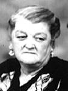

fiche familiale
*******************************************************************************
 |
Armand Rivet Rivest décède à l'âge de 75 ans. Naissance le 23 avril 1890 à St-Alphonse-de-Rodriguez Baptême le 23 avril 1890 à St-Alphonse-de-Rodriguez Parrain Wilfrid Rivet, marraine Emma Valois, cousins de son père. Décès le 22 février 1966 à l'hôpital Ste-Famille de Ville-Marie Sépulture le 23 février 1966 à Ville-Marie. Occupation: Cultivateur. C'est en 1927 qu'il s'établissait à Ville-Marie se portant acquéreur d'une ferme historique ayant été la propriété d'un descendant de la noblesse Belge, le Baron André Kervyn de Volkaersbeke. Parrain de Lionel Lambert et de Patrice Rivest. Père: Urgel Rivet RivestMère: Agnès Piquette Piquet (sa famille) |
Mariage le 24 juin 1912 à St-Isidore de Laverlochère
|  |
Épouse: Ida Brouillard décède à l'âge de 79 ans. Naissance le 16 février 1892 à Scotstown, cté Compton Baptême le 17 février 1892 à St-Paul de Scotstown. Décès le 31 août 1971 à l'hôpital Ste-Famille de Ville-Marie Sépulture le 3 septembre 1971 à Ville-Marie Marraine de Lionel Lambert et de Patrice Rivest. Père: Félix Brouillard Mère: Hélène Labonne (sa famille) |
Enfant 1 Emmanuel Rivest
décède à l'âge de 86 ans.
Naissance: 10 mars 1913 à Laverlochère
Décès: 16 déc 1999 à Ville-Marie
Sépulture: 18 déc 1999 au Cimetière de Ville-Marie
Mariage le 19 juin 1935 à Notre-Dame-du-Rosaire de Ville-Marie
Conjointe: Germaine Ranger
décède à l'âge de 78 ans.
Naissance: 2 avril 1911 à Ville-Marie
Décès: 24 oct 1989 à Ville-Marie
Père: Antoine Ranger
Mère: Olivine Renaud
Enfant 1 Réjeanne Rivest
Conjoint: Yvan Damphouse
Enfant 2 Rachel Rivest
Conjoint: Roland Francoeur
Enfant 3 Lise Rivest
Conjoint: Réal Perron
Enfant 4 Huguette Rivest
Conjoint: Jean-Guy Gélinas
Enfant 5 Solange Rivest
décède à l'âge de 20 ans
Enfant 6 Pauline Rivest
Conjoint: Luc Gaudet
Enfant 7 Rolande Rivest
Conjoint: Normand Laliberté
Enfant 8 Réjean Rivest
Conjointe: Diane Dubois
-------------------------------------------------------------------------------
Enfant 2 Lionel-Joseph-Arthur Rivet
décède à l'âge de 5 mois.
Naissance: 23 mai 1915 à Laverlochère
Décès: 17 oct 1915 à Laverlochère
-------------------------------------------------------------------------------
Enfant 3 Victorin-Aurèle Rivet
décède à l'âge de 27 jours.
Naissance: 4 jul 1917 à Laverlochère
Décès: 31 jul 1917 à Laverlochère
-------------------------------------------------------------------------------
Enfant 4 Marie-Colette-Cécile Rivet
décède à l'âge de 1 mois.
Naissance: 30 mai 1918 à Laverlochère
Décès: 28 juin 1918 à Laverlochère
-------------------------------------------------------------------------------
Enfant 5 Aurèle-Albert-Joseph Rivet
décède à l'âge de 1 mois.
Naissance: 1 oct 1919 à Laverlochère
Décès: 1 nov 1919 à Laverlochère
-------------------------------------------------------------------------------
  |
Enfant 6 Émilien Rivest décède à l'âge de 77 ans. Naissance: 13 déc 1920 à Laverlochère Décès: 22 déc 1997 à Rouyn-Noranda Funérailles: 26 déc 1997 à Sacré-Coeur-de-Jésus de Rouyn-Noranda Sépulture: 26 déc 1997 au cimetière Notre-Dame de Rouyn-Noranda C'est lui qui acquit la ferme paternelle. La maison construite par le Baron fût détruite par les flammes le 5 janvier 1957. Mariage le 20 août 1941 à Notre-Dame-du-Rosaire de Ville-Marie Conjointe:Élise Rannou décède à l'âge de 93 ans. Naissance: 8 sep 1921 à Ville-Marie Décès: 7 mars 2015 à Rouyn-Noranda Funérailles: 10 mars 2015 à Rouyn-Noranda Père: Pierre Rannou Mère: Alma Duret |
Conjoint: Robert Joyal
Enfant 2 Claudette Rivest
Conjoint: Réal Robert
Conjoint: Georges Cloutier
Enfant 3 Nicole Rivest
Conjoint: Réjean Dubé
Conjoint: Michel Côté
Enfant 4 Gilles Rivest
Conjointe: Francine Turbide
Enfant 5 Céline Rivest
Conjoint: Luc Deshaies
-------------------------------------------------------------------------------
 |
Enfant 7 Estelle Rivest décède à l'âge de 70 ans. Naissance: 2 jan 1923 à Laverlochère Décès: 8 juin 1993 à Rouyn-Noranda Funérailles: 12 juin 1993 à Sacré-Coeur-de-Jésus de Rouyn-Noranda Sépulture:au cimetière Notre-Dame de Rouyn-Noranda Mariage le 1 mai 1940 à Notre-Dame-du-Rosaire de Ville-Marie Conjoint: Paul-Henri Ranger décède à l'âge de 75 ans. Naissance: 22 octobre 1918 à Ville-Marie Décès: 13 octobre 1994 à Rouyn-Noranda Funérailles: 22 oct 1994 à Sacré-Coeur-de-Jésus de Rouyn-Noranda Sépulture: au cimetière Notre-Dame de Rouyn-Noranda Père: Antoine Ranger Mère: Olivine Renaud |
décède à l'âge de 65 ans
Conjointe: Lise Tremblay
décède à l'âge de 61 ans
Enfant 2 Marcelin Ranger
Conjointe: Dolorès Henderson
Enfant 3 Nelson Ranger
Conjointe: Nicole Normandin
Enfant 4 Jacqueline Ranger
Conjoint: Pierre Raymond
Enfant 5 Jean-Claude Ranger
Conjointe: Diane Galarneau
-------------------------------------------------------------------------------
 |
Enfant 8 André Rivest décède à l'âge de 70 ans Naissance: 26 jul 1924 à Laverlochère Décès: 3 jan 1995 à La Corne Sépulture: au cimetière de Ville-Marie Mariage le 8 mai 1946 à Notre-Dame-de-Lourdes de Lorrainville Conjointe: Jeanne-D'Arc Mercier décède à l'âge de 90 ans Naissance: 24 avril 1926 à Lorrainville Décès: 3 juillet 2016 à La Sarre Sépulture: au cimetière de Normétal Père: Joseph Mercier Mère: Flore Dallaire |
Conjoint: Claude Chrétien
Enfant 2 Gaétan Rivest
Conjointe: Lucile Dupuis
Enfant 3 Christian Rivest
Conjointe: Ginette Tremblay
Enfant 4 Danielle Rivest
Conjoint: Richard Lemay
Enfant 5 Marlène Rivest
Conjoint: Bruce Whitworth
Enfant 6 Johanne Rivest
Conjoint: Serge Goulet
-------------------------------------------------------------------------------
 |
Enfant 9 Hélène Rivest décède à l'âge de 84 ans Naissance: 10 déc 1925 à Laverlochère Décès: 6 mai 2010 à Ville-Marie Sépulture: au cimetière de Ville-Marie Mariage le 11 août 1943 à Notre-Dame-du-Rosaire de Ville-Marie Conjoint: Gérard Bernard décède à l'âge de 60 ans. Naissance: 21 déc 1921 à Béarn Décès: 22 fév 1982 à Ville-Marie Père: Félix Bernard Mère: Amanda Barrette |
Conjoint: Raymond Gironne
Enfant 2 Roger Bernard
Conjointe: Clairette Marseille
Enfant 3 Camil Bernard
Enfant 4 Ghislain Bernard
Conjointe: Marielle Coutu
Enfant 5 Monique Bernard
Conjoint: Claude Lacroix
Enfant 6 Jacinthe Bernard
décède à l'âge de 41 ans
Conjoint: Robert Denis
Enfant 7 Jacquelin Bernard
Conjointe: Laurette Desrochers
Enfant 8 Normand Bernard
Conjointe: Marlène Fortier
Conjointe: Diane Brillon
Enfant 9 Sylvie Bernard
Conjoint: Claude Lambert
Enfant 10 Dany Bernard
Conjointe: Céline Thérien
-------------------------------------------------------------------------------
  |
Enfant 10 Jeanne Rivest décède à l'âge de 86 ans Naissance: 2 déc 1927 à Ville-Marie Décès: 9 novembre 2014 à Ville-Marie Sépulture: au cimetière de Ville-Marie Mariage le 20 novembre 1946 à Notre-Dame-du-Rosaire de Ville-Marie Conjoint: Fernand Rannou décède à l'âge de 94 ans Naissance: 15 mai 1920 à Ville-Marie Décès: 30 mars 2015 à Ville-Marie Sépulture: au cimetière de Ville-Marie Père: François Rannou Mère: Laurenza Bérubé |
Conjoint: Raymond Beauséjour
Enfant 2 Louise Rannou
Conjoint: Raoul Larochelle
Enfant 3 Jocelyne Rannou
Conjoint: Pierre Bastien
Enfant 4 Jean-Luc Rannou
Conjointe: Colette L'Heureux
Conjointe: Thérèse Martel
Enfant 5 Danielle Rannou
-------------------------------------------------------------------------------
 |
Enfant 11 Madeleine Rivest décède à l'âge de 75 ans Naissance: 13 avril 1929 à Ville-Marie Décès: en 2004 Sépulture: au cimetière de Ville-Marie Mariage le 17 mai 1951 à Notre-Dame-du-Rosaire de Ville-Marie Conjoint: Yvon Lemire décède à l'âge de 86 ans Naissance: 22 août 1929 à Guigues Décès: 27 avril 2016 à Gatineau Sépulture: au cimetière de Ville-Marie Père: Bruno Lemire Mère: Marceline Guimond |
Conjoint: Pierre Courchesne
Enfant 2 Jean-Guy Lemire
Conjointe: Francine ???
-------------------------------------------------------------------------------
Enfant 12 Jean-Guy Rivest
Naissance: 12 juin 1930 à Ville-Marie
Mariage le 26 octobre 1963 à Joliette.
Conjointe: Marguerite Giguère
Naissance: 27 mars 1936 à Joliette
Père: Ovila Giguère
Mère: Odile Houde
Enfant 1 Marie-Josée Rivest
-------------------------------------------------------------------------------
Enfant 13 Paul Rivest
décède à l'âge de 4 mois.
Naissance: 22 sep 1932 à Ville-Marie
Décès: 29 jan 1933 à Ville-Marie
-------------------------------------------------------------------------------
 |
Enfant 14 Jacques Rivest Naissance: 26 avril 1934 à Ville-Marie Décès: avant 1999 Mariage le 12 mai 1953 à Notre-Dame-de-Lourdes de Lorrainville Conjointe: Françoise Bellehumeur décède à l'âge de 85 ans Naissance: 16 septembre 1932 à Lorrainville Décès: 3 janvier 2018 à Gatineau Père: Gabriel Bellehumeur Mère: Mathilde Chénier Bellemare |
Conjoint: Denis-Edouard Sommerfield
Enfant 2 Francyne Rivest
Enfant 3 Pierre Rivest
Enfant 4 Marcelle Rivest
Enfant 5 Hélène Rivest
Conjoint: Denis Maheu
Enfant 6 Carole Rivest
Conjoint: Handy Langham
Enfant 7 Gaston Rivest
Enfant 8 Alain Rivest
Enfant 9 Stéphane Rivest
-------------------------------------------------------------------------------